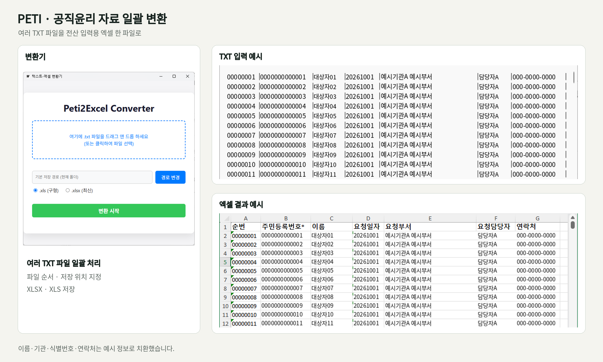

합칠 파일 고르기
선택창에서 고르거나 드래그해 TXT 파일을 추가합니다. 목록에서 파일을 빼거나 순서를 바꿀 수 있습니다.
PETI / FILE CONVERSION
공직윤리시스템에서 내려받은 여러 TXT 파일을
전산 입력용 엑셀 한 파일로 합칩니다.
실무 성과
수십~수백 개 TXT, 한 번에 처리
기관별 요청량에 따라 늘어나는 파일을 일괄 병합·파싱해, 실무자가 복사·분리·저장에 쓰던 반복 업무 시간을 크게 줄였습니다.
공직윤리시스템에서 받은 재산 조회 요청은 |로 구분된 TXT 파일이었지만, 사내 전산에 입력하려면 엑셀 파일이 필요했습니다. 파일 내용을 복사해 엑셀에 붙여 넣고, 텍스트 나누기를 실행한 뒤 XLS로 저장하는 작업을 반복했습니다.
기관별 요청량에 따라 수십~수백 개가 되는 파일을 한 번에 선택해 병합·파싱하도록 만들었습니다. 정해진 7개 항목을 나누고 식별번호를 보존한 엑셀을 만들어, 실무자가 파일을 하나씩 정리하는 단계를 줄였습니다.
TXT의 내용을 순번·식별번호·이름·요청일자·부서·담당자·연락처의 7개 열로 나눕니다.

선택창에서 고르거나 드래그해 TXT 파일을 추가합니다. 목록에서 파일을 빼거나 순서를 바꿀 수 있습니다.
EUC-KR 문자를 읽고 |에서 항목을 나눠, 정해진 7개 열에 넣습니다.
값을 문자열로 저장해 순번이나 식별번호 앞의 0이 사라지지 않게 합니다.
XLSX는 Excelize로 저장합니다. XLS는 설치된 Microsoft Excel을 COM으로 불러와 변환합니다.
|로 구분합니다.XLS로 저장하려면 PC에 Microsoft Excel이 설치되어 있어야 합니다.